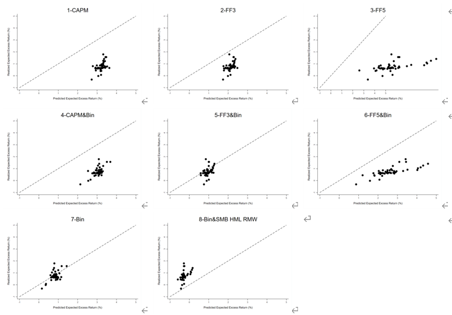

About Me
Education: Beijing Normal University Sep 2021 - Jun 2025
GPA: 3.9/4.0, 93.16/100
Rank:
1st of the college (Top 2.33%)
Coursework:
Calculus (98), Microeconomics (95), Macroeconomics (99), Statistics (95), Real Variable Function (97), Finance
(97), Corporate Finance (96), Financial Engineering (96), Data Structure (94), Econometrics (94), JAVA (95),
International Trade (95), Investment (94)
HONORS:
- National Scholarship (Top 1% of the university, highest scholarship from Ministry of Education of China)
- The First Prize Scholarship (Top 10% of the school, highest academic honor at BNU)
- International Genetically Engineered Machine Competition (GOLD MEDAL)
- Excellent Survey Team of China Health and Retirement Longitudinal Study
- National Math Contest (the third prize at provincial level)
- National Mathematical Modeling Contest (the second prize at provincial level)
- National College Students Market Survey and Analysis Competition (the third prize at provincial level)
Publications
-

Supervisor: Han, M., Dr., from BNU
How the value investment strategy is priced in China's A-share market is a popular topic in the field of
asset pricing. In this paper, I found the individual stock data of Shanghai and Shenzhen A-shares from 1998
to 2023 and compute Buffett's indicators with cheapness, safety, and quality. Then, I use Fama-Macbeth
two-stage regression with the construction of portfolios to compare the empirical performances of the CAPM,
Fama-French five-factor model and other factor models added Buffett's factors. This paper totally compare 8
models to construct the extended factor model of excess returns in China's stock market. The results show
that the Buffett indicator can explain the existence of excess returns in China's stock market; the factor
model containing the Buffett factor is more suitable to be used as the pricing model of China's stock market
than conventional; the Buffett factor measure constructs the extended six-factor model of the value
investment strategy, which is effective in explaining the characteristics of China's stock market returns.
Research Experience
- Beijing Normal University, Research Assistant Dec 2023 – Feb
2024
Supervisor: Du, Tongyun, Dr., from BNU
Project: Supported by the Fundamental Research Funds for the Central Universities
Extracted Trust/Cohesion etc. to estimate social capital from Thousand-Village Survey in Guangdong database
Established non-linear impact mechanisms based on machine learning to explore the impact of social capital
support role on life satisfaction of urban-rural shift, aiming to providing policy advice to improve life
quality
- Peking University, Interviewer Mar 2022 – Oct 2022
Supervisor: Zhao, Yaohui, Prof., from PKU
Project: China Health and Retirement Longitudinal Study
Visited more than 15 sample villages and interviewed over 60 middle-aged and elderly people, aiming to collect
a set of high-quality micro-data representing households and individuals of Chinese people aged 45 and above.
Completed the whole process from procurement to questionnaire survey, medical examination and collection of
biological information to analyze the problem of population ageing in China and interdisciplinary research.
Professional Experience
- Topsperity Securities, Shanghai Aug 2023 – Oct 2023
Position: Research Intern in overseas macroeconomics intuition
Built databases of U.S. inventories, retail sales, CPI, U.S. bond allocation of QDII funds from Fred,
Bloomberg, wind, etc., and analyzed through Excel functions and pivot table to judge the U.S. macroeconomic
trend
Explored PMI etc. in the supply-side and Inflation/imports & exports/US dollar index in the demand-side data
in the US, Japan and Europe, and write 4 macro reports weekly to find out the causes and impact on investors
Gathered the proxy indicators behind many unusual economic data, such as student loan forgiveness during the
COVID-19 and the macro trend of the inventory replenishment cycle in US to analyze the reasons of anomalies
Activity
Inflencer, Blibili and Litle Red Book Aug 2023 – Oct
2023
- Published original study notes for professional courses, with sales over 20,000 RMB
- Taught core courses of economics, finance, computer, and math courses online, gaining more than 20,000
followers and over 1 million video views and widely recognized amongst peers and teachers
- Extracted the key points and difficulties to make them simpler, popular videos include: Literature
derivation of microscopic models of lemon cars that awarded Nobel Prize
Powered by Jekyll and Minimal Light theme.